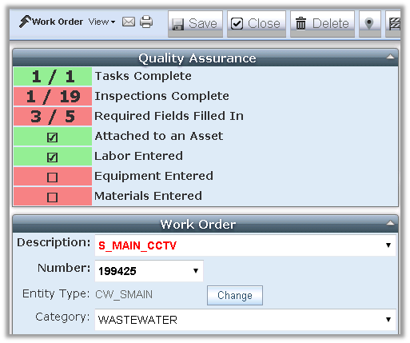

Cityworks Quality Assurance Plugin
Quality assurance tools for Cityworks Server that validate data entry when it happens

Ensuring quality data entry is key to any Cityworks deployment. But if data isn't validated when it's entered (especially from the field), problems are often found too late to fix. These tools allow Cityworks administrators to add extra checks and controls to the forms in Cityworks to ensure that users are entering high quality data.
Getting Started
Please refer to the README document on GitHub or in the code download for instructions on If you need any help, feel free to contact Steve Shaffer at EEC (sshaffer@eecenvironmental.com) for help or if you have questions.
Special Thanks
Special thanks to the City of Sacramento's Department of Utilities for making this tool possible, shaping the initial development, and supporting its release to the Cityworks community.
Thanks also to all the hardworking folks at Cityworks for their dedication to building an extensible platform for awesome GIS-centric public asset management!